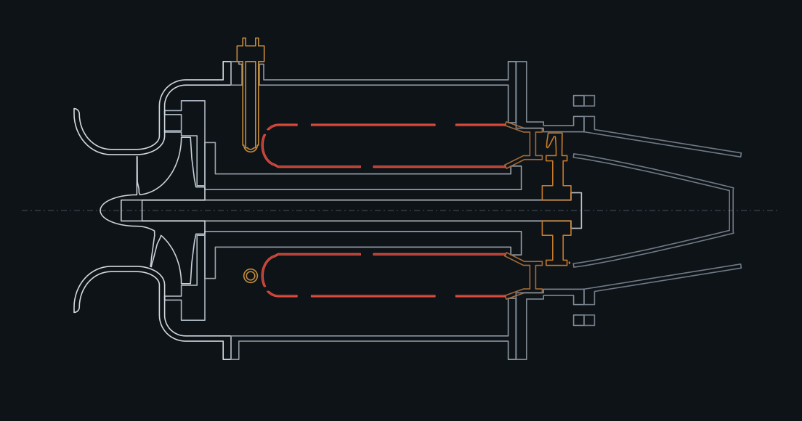

The whole engine on one page
You have the science. Here is the machine, complete, before we build it piece by piece in chapter 6. Think of it as the map you look at before you start walking.
A true cross-section
This drawing was not hand-drawn: it is the mid-plane slice through the 14 STL files you can download (so it is exactly the engine, to scale). Air flows from left to right.

| # | Part | Job | Chapter-6 step |
|---|---|---|---|
| 1 | Inlet bellmouth + compressor housing | Gather air smoothly, guide it to the impeller, hold a 0.4 mm gap over the blade tips | 4 |
| 2 | Centrifugal impeller | Suck & squeeze: throws air outward at 337 m/s | 2 |
| 3 | Diffuser plate + vanes | Slow the air from 330 to ~140 m/s, converting speed to pressure | 3 |
| 4 | Bearing tunnel (the “spine”) | Holds the two bearings and ties the hot end to the cold end | 1 |
| 5 | Combustor casing | Pressure vessel around the flame tube; carries fuel and igniter ports | 5 |
| 6 | Flame tube (Coke can) | Bang: burns fuel in a stable pocket, then dilutes the gas to turbine-safe temperature | 6 |
| 7 | Fuel ring + igniter | Meter propane into the primary zone; spark to light it | 7 |
| 8 | Nozzle guide vanes | Accelerate and swirl the hot gas onto the turbine | 8 |
| 9 | Turbine wheel | Extracts ~12 kW to drive the compressor | 8 |
| 10 | Turbine casing | Shroud with 0.2–0.4 mm tip gap | 9 |
| 11 | Exhaust nozzle + tail cone | Blow: converts the leftover pressure to a 376 m/s jet | 9 |
| 12 | Main shaft | Locks impeller and turbine together on Ø8 steel | 1 |
Station numbers
Engineers label the points along the gas path with numbers so everyone talks about the same place. We use a simplified set:
- 0: free air far ahead. 2: compressor exit. 3: turbine inlet (TIT). 4: turbine exit (EGT, exhaust gas temperature). 5: nozzle exit.
The key numbers at each station at full power, from the model (try the calculator below to change anything):
Spec sheet
Performance curves
Real engines come with a data sheet like this. Four things to notice: (1) thrust grows much faster than rpm; (2) fuel flow climbs steeply near the top; (3) at idle the exhaust gas is about as hot as at full power, because the engine runs lean and is limited by what can sustain combustion, not by power; (4) the compressor’s pressure ratio goes as (speed)².
The power balance that fixes the speed
There is no “speed knob” on a jet engine. You give it a fuel flow and it finds its own speed: the one where the turbine exactly pays the compressor’s bill. If the turbine makes more than the compressor needs the surplus accelerates the rotor (rotor inertia $I\approx 340\ \text{g·cm}^2$):
Now let’s build it
The next chapter takes this finished machine apart and puts it back together in ten layers. Each step introduces one component: what it is for, the physics and numbers behind it, a widget to play with, how to make it cheaply, and the 3D model to rotate and download.